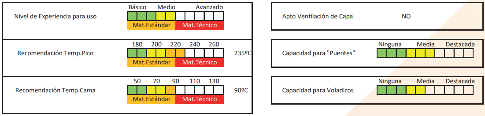
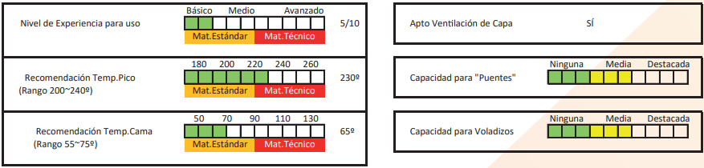
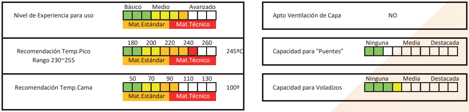

<!DOCTYPE html> 
<html lang="en"> 
    <head> 
        <meta charset="UTF-8"/> 
        <meta http-equiv="X-UA-Compatible" content="IE=edge"/> 
        <meta name="viewport" content="width=device-width, initial-scale=1.0"/> 
        <link rel="stylesheet" href="css/reset.css"/> 
        <link rel="stylesheet" href="css/style.css"/> 
        <link rel="stylesheet" href="css/maqueta.css"/> 
        <link rel="preconnect" href="https://fonts.googleapis.com"/> 
        <link rel="preconnect" href="https://fonts.gstatic.com" crossorigin/> 
        <link href="https://fonts.googleapis.com/css2?family=Rajdhani:wght@300;400;500;700&display=swap" rel="stylesheet"/> 
        <script src="https://kit.fontawesome.com/b67d1146f3.js" crossorigin="anonymous"></script>         
        <title>3D</title>         
    </head>     
    <body> 
        <div class="sombra">
            <div class="pad10">
        <header class="header-principal"> 
            <div class="contenedor"> 
                <h1 class="header-logo"> <i class="fa-brands fa-unity" style="font-size: 48px; color: coral;"></i> <a href="">SD3D</a> </h1> 
                <nav class="header-navegacion"> <a class="header-navegacion-link" href="./index.html">Home</a> <a class="header-navegacion-link" href="">Impresoras</a> <a class="header-navegacion-link" href="./filamentos.html">Filamentos</a> <a class="header-navegacion-link" href="./contacto.html">Contactenos</a> 
                </nav>                 
                <div> <i class="fa-brands fa-facebook" style="font-size: 28px;"></i> <i class="fa-brands fa-twitter" style="font-size: 28px;"></i> <i class="fa-brands fa-instagram" style="font-size: 28px;"></i> 
                </div>                 
            </div>             
        </header>      
    </div>   
       
        <div class="contenedorprincipal"> 
                  <div class="contfila">
                    <div class="tipofila">
                        <h1>ABS</h1>
                        <p>Acrilonitrilo Butadieno Estireno</p>
                    </div>
                    <div class="fichafila">
                        <p>El material con el que se inició prácticamente la impresión 3D, dada su abundancia en el mundo, sus capacidades al 
                            impacto y tempertaturas, y su buena 
                            fluencia al imprimirse. Es el más económico de los plásticos de ingeniería. Siendo 
                            útil para impresiones ya sean recreativas 
                            ó decorativas, su fuerte radica en pequeñas piezas mecánicas ó bien piezas que 
                            vayan a soportar trabajo. Material de 
                            entrada al universo de impresiones 3D 
                            Funcionales, por un muy bajo precio.
                            Notas de Adherencia:
                            En Plásicos de Ingeniería se requieren 
                            cuidados para adherir, caso ABS
                            * Cama caliente (90ºC/110ºC)
                            * Control del ambiente de impresión 
                            (Evitar corrientes de aire)
                            * Fijador para cabello es suficiente como 
                            adherente</p>
                            <br>
                            
                    </div>
                  </div>
                  <div class="contfila">
                    <div class="tipofila">
                        <h1>ACETAL</h1>
                        <p>Polioximetileno – POM Copolímero</p>
                    </div>
                    <div class="fichafila">
                        <p>El Polioximetileno o Acetal, conocido por la 
                            abreviatura POM, es uno de los materiales más 
                            utilizados en inyección, junto a Nylons (Poliamidas) y 
                            polietilenos, es cada vez más popular en la 
                            impresión 3D. El Acetal es un material técnico 
                            semicristalino, (contiene zonas amorfas y cristalinas)
                            La Variante Acetal Grilon3 es POM Copolímero, con
                            mejores propiedades térmicas y químicas y, por lo
                            tanto, como pieza terminada reacciona mejor a las
                            fluctuaciones de temperatura y las influencias químicas.
                            Una pieza impresa con Acetal permanece estable y 
                            no se deforma, incluso cuando está expuesta a 
                            temperaturas que oscilan entre -40 y +130ºC. La 
                            absorción de humedad es muy baja y tiene un buen 
                            aislamiento eléctrico. Además, se caracteriza por su 
                            resistencia al impacto y a la abrasión, con 
                            excelentes propiedades de deslizamiento. La 
                            resistencia al impacto se debe en particular a la muy 
                            buena adhesión entre las capas. 
                            Acetal no se manifiesta como un maeterial sensible 
                            al uso de productos químicos, pudiendo por ejemplo 
                            lubricar ó desinfectar las piezas. Gracias a su 
                            resistencia al impacto y baja fricción, así como a sus 
                            buenas propiedades de deslizamiento, es adecuado 
                            para la fabricación de Bujes, Engranajes, 
                            Rodamientos y piezas mecánicas en general. Tener 
                            en cuenta que Acetal es un material estrictamente 
                            técnico, y en esta versión POM Copolímero 
                            garantiza minimas emisiones tóxicas extruyéndolo 
                            por debajo de los 240ºC (no sobrepasar esas 
                            temperaturas y no dejarlo mucho tiempo cargado en 
                            un hotend caliente sin imprimirse para evitar 
                            liberación de vapores) , pero se recomienda tener 
                            una cámara cerrada, ventilar bien la habitación y 
                            protegerse lo suficiente</p>
                            <br>
                            
                    </div>
                  </div>
                  <div class="contfila">
                    <div class="tipofila">
                        <h1>PETG</h1>
                        <p>Polietileno Tereftalato, glicolizado</p>
                    </div>
                    <div class="fichafila">
                        <p>El PETG debe su aparición al combinar PET con 
                            Glicol, mejorando las ya interesantes propiedades del 
                            PET. El PET nace en 1941, y al igual que el PLA, es 
                            un poliéster, pero fue en 1976, cuando este polímero 
                            sufrió su auge con la fabricación de botellas para 
                            bebidas, por esto último, no es de extrañar que el PET
                            sea el plástico más utilizado del mundo. 
                            El PETG como material utilizado en la impresión 3D 
                            se caracteriza por una funcionalidad muy similar al 
                            ABS (buena resistencia a la temperatura, duradero, 
                            resistente) y la facilidad de ser impreso como el PLA. 
                            Además muestra excelente adhesión entre capas, 
                            muy poca deformación durante la impresión, resistencia a ambientes con temperaturas bajas, resistencias 
                            químicas (a bases y ácidos) y la ausencia de olor 
                            durante su impresión. 
                            La modificación con Glicol lo hace un copoliéster, más 
                            transparente y más fuerte. Solo pensar en una botella 
                            de agua mineral y verás su compatibilidad como 
                            material para contacto con alimentos como así 
                            también el más amigable al día de hoy con el medio 
                            ambiente dado que es Reciclable y acoplable a todo 
                            circuito de recuperación de residuos urbanos.
                            ¿Ejemplos de usabilidad?
                            * Como un ABS en resistencia mecánica -incluso 
                            superior- , pero simple de imprimir (como un PLA)
                            * Como un PLA en simplicidad de uso, pero su origen 
                            no es de recursos renovables.
                            * En resistencias térmicas no supera a ABS, pero está 
                            mucho mejor posicionado que PLA (PLA=55ºC / 
                            PETG=85ºC / ABS 90ºC)
                            Otra ventaja es que nuestro PETG tiene una transparencia del 92%, superando claramente a ABS y 
                            también a PLA, lo que le otorga capacidad de imprimir 
                            tonos translúcidos como nunca antes, y por supuesto, 
                            ante el uso de alguno de nuestros colores plenos, 
                            toda la vividez posible, dejando exponer la pigmentación sin interferencias del material base. No te prives 
                            de probar un PETG Grilon3 en coloración "Clear", 
                            translúcidos hechos con toda la sabiduría y 
                            conocimiento de NTH desde 1951 aplicadas a un 
                            material excelente para tal efecto, nuestro máximo 
                            exponente en la gama Clear es el "Nova", tono 
                            dicrómico, que transicionará en un mismo filamento, 
                            de azules/celes</p>
                            <br>
                            
                    </div>
                  </div>
                  <div class="contfila">
                    <div class="tipofila">
                        <h1>NYLON 6</h1>
                        <p>Poliamida 6</p>
                    </div>
                    <div class="fichafila">
                        <p>Nylon6 (Poliamida de Valor para impresión 3D)
                            ¡Bienvenido a los plásticos de Ingeniería! Nylon es 
                            el material que más proliferó en el mundo plástico 
                            desde su aparición, hoy en día se encuentra Nylon 
                            hasta en los lugares menos pensados, pasando 
                            por Textiles, Industrias, engranajes, Ruedas, 
                            Cubiertas vehiculares, Industria petrolera, 
                            automotriz, etc.
                            En Nylon6 se acerca al impresor 3D con curiosidades técnicas un material económico para experimentar sus resultados en impresión 3D. La ventaja 
                            radica en que Nylon6 aporta valor sin sacrificar 
                            calidad. 
                            Se recomienda comenrzar por pequeños engranajes ó piezas para someterlas a trabajo, buscar 
                            piezas de perímetro circular en principio para 
                            evitar warping dada su contracción, que requiere 
                            mucho control del ambiente.
                            Notas de Adherencia: El Material es higroscópico 
                            (Toma humedad) por naturaleza. Nylon6 tiene 
                            hasta 3% de humedad, dejándolo a ambiente 
                            puede llegar a tomar más humedad. Por debajo 
                            del 2% es imprimible. Se recomienda secar si se 
                            va a emplear en una impresión muy larga. 
                            Para esto el ideal es cortar el tramo que pida el 
                            programa de sliceo, y secarlo en lapsos de 30 
                            segundos en microondas en modo descongelado, 
                            10 metros requieren dos o tres lapsos de secado, 
                            una servilleta de papel tissú hace el resto luego del 
                            horno. Otra opción es el horno común, cuidando 
                            de que no pase de 70º, y con poco tiempo queda 
                            seco ¡Rendirá mucho más bien seco! Adherir con 
                            cola vinicila "Plasticola", Voligoma, ó la solución 
                            técnica del diluído de Suprabond adhesivo de 
                            contacto transparente sin tolueno, con una esponjita con aguarrás.
                            Importante 1er capa a 220ºC y sucesivas a 245ºC 
                            es el dato para comenzar a usar.
                            Precisás más info? Contactá a tu proveedor ó 
                            fabricante</p>
                            <br>
                            
                    </div>
                  </div>    
                  <div class="contfila">
                    <div class="tipofila">
                        <h1>NYLON 12</h1>
                        <p>Poliamida 12</p>
                    </div>
                    <div class="fichafila">
                        <p>Nylon12 (Poliamida Técnica
                            Premium para impresión 3D)
                            Nylon12 es la máxima expresión en resistencias y 
                            prestaciones mecánicas/resistencias quimicas, 
                            incluso tolerando perfectamente todo contacto con 
                            combustibles, hidrocarburos, aceites, bases, etc.
                            Es la Poliamida empleada en Aeronáutica, 
                            Automotriz, Espacial, y muchas aplicaciones 
                            técnicas rigurosas y específicas.
                            Imprimir 3D Nylon12 es un gran desafío por las 
                            piezas a conseguir, y también lo es para el 
                            hardware, que en muchos casos hay que adaptarlo para ganar temperatura en plataforma y área de 
                            fabricación (cuidado de temperaturas ambiente).
                            Se recomiendan los mismos cuidados al imprimirse que con Nylon6, siendo Nylon12 más rígido, y 
                            más simple de utilizar una vez lograda la adhesión 
                            a base. Tolera mejores puentes, voladizos, 
                            retracciones y velocidades.
                            Otra ventaja de Nylon12 por sobre Nylon6 es la 
                            higroscopicidad, no requiere secado si uno no es 
                            muy riguroso, su 1.2% de origen permite imprimirlo sin problemas, y no tomará más humedad que 
                            1.5% dejándolo al ambiente (siempre se 
                            recomienda cerrar material cuando no se usa, con 
                            su desecante).
                            Tolerancias de hasta 110ºC ambiente (Picos de 
                            140ºC) y con proceso de Annealing puede llegar a 
                            tolerar constantes 180ºC.
                            Para imprimirse , es más "Frío" aún que Nylon6, 
                            otra ventaja, pudiendo imprimirse desde los 220º 
                            hasta los 250ºC
                            Notas de Adherencia: Adherir con cola vinílica 
                            "Plasticola", Voligoma, ó la solución técnica del 
                            diluído de Suprabond adhesivo de contacto 
                            transparente sin tolueno, con una esponjita con 
                            aguarrás.
                            Importante 1er capa a 220ºC y sucesivas a 240ºC 
                            es el dato para comenzar a usar.
                            Precisás más info? 
                            Contactá a tu proveedor ó fabricante</p>
                            <br>
                            
                    </div>
                  </div>    
                  <div class="contfila">
                    <div class="tipofila">
                        <h1>PLA</h1>
                        <p>Ácido Poliláctico</p>
                    </div>
                    <div class="fichafila">
                        <p>PLA es el material más utilizado en impresión 3D, destaca su simplicidad de uso, 
                            bajo costo, baja huella ecológica (material 
                            biodegradable) y baja temperatura de 
                            impresion.
                            De la gama de los poliésteres, resulta de
                            una síntesis de laboratorio, siendo su
                            precursor el ácido láctico extraído de
                            muchas plantas como la mandioca, el
                            maíz, etc; para resultar en ácido poliláctico.
                            Su perfil de aplicación ideal es para prototipos rápidos, peizas decorativas,
                            semifuncionales, para indoors generalmente, prácticas de impresión, hobbismo,
                            figuras de superhéroes, coleccionables,
                            figuras artísticas, réplicas decorativas, etc.
                            Buen brillo en el color final, material de 
                            acabado rígido.
                            Notas de Adherencia:
                            Uno de los materiales de más baja
                            contracción, amorfo, de la familia de los
                            poliésteres, excelente adherencia, no
                            requiere cama calefaccionada, sólo fijador
                            tipo laca para cabello, recomendado si es
                            posible plataforma de impresión a 50ºC</p>
                            <br>
                            
                    </div>
                  </div>
                  <div class="contfila">
                    <div class="tipofila">
                        <h1>FLEX</h1>
                        <p>Poliuretano modificado</p>
                    </div>
                    <div class="fichafila">
                        <p>Flex (y variaciones).
                            Los Filamentos "Flex" son diversos grados
                            de poliuretano ó caucho termoplástico.
                            También llamados PUR ó TPU. Su principal cualidad es poder lograr piezas elásticas, dada su flexibilidad y su condición de
                            elastómero de termoplástico (permite
                            estirarse y retraerse en ciclos muy elevados sin alteraciones dimensionales*).
                            Los Flex gozan tanto de usos técnicos
                            como de usos recreativos, así que liberarán tu mente para buscar piezas flexibles
                            como juguetes, pequeños calzados, plantillas, ó bien regatones, topes, ó toda aplicación que requiera un plástico que no sea
                            rígido. Modulando infill podrás modular
                            elasticidad y flexibilidad. Es un interesante
                            material, en esta versión simplificada,
                            moligera sus cuidados en velocidades y
                            retracciones dado que en un flex standard
                            no es simple que la impresora lo traccione
                            y encause bien hasta su hotend. Se podrán
                            utilizar configuraciones de uso muy similares a las de PLA con este material.
                            Notas de Adherencia: La gran cualidad de 
                            los Flex es que no requieren cama 
                            calefaccionada, y tampoco adherente, el 
                            poliuretano es adhesivo por naturaleza, lo 
                            que también hará que adhiera pefecto 
                            entre capas. </p>
                            <br>
                            
                    </div>
                  </div>                     
            <div class="contenedormain"> 
</div>             
            <footer class="footcontenedor"> 
                <div class="foot"> 
                    <h2><i class="fa-brands fa-unity"></i>SD3D</h2> <a href="">Home</a> <a href="">Noticias</a> <a href="">Blog</a> <a href="">Foro</a> 
                </div>                 
                <div class="foot"> 
                    <h2><i class="fa-solid fa-print"></i>IMPRESORAS</h2> <a href="">FDM</a> <a href="">Resina</a> <a href="">Modelos</a> <a href="">Matenimiento</a> 
                </div>                 
                <div class="foot"> 
                    <h2><i class="fa-solid fa-circle-notch"></i>INSUMOS</h2> <a href="">Filmanetos</a> <a href="">Resinas</a> <a href="">Técnicos</a> <a href="">Colores</a> 
                </div>                 
                <div class="foot"> 
                    <h2><i class="fa-solid fa-address-card"></i>CONTACTO</h2> <a href="">Formulario de contacto</a> <a href="">email@sd3d.com</a> <a href="">tel: 456-457893</a> <a href="">direccion postal</a> 
                </div>                 
            </footer>             
            <div class="marcas"> 
                 
                 
                 
                 
                 
            </div>             
        </div>       
    </div>  
    </body>
